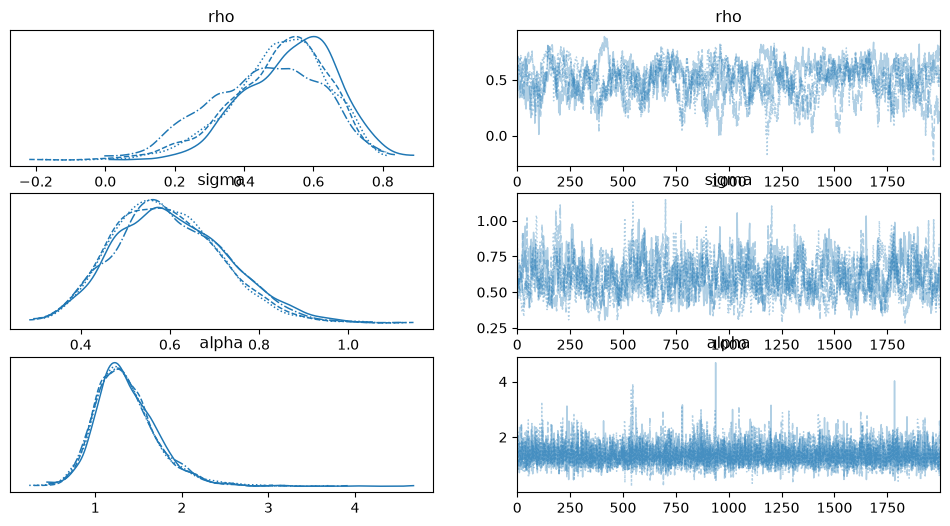

Count and Binary Spatial Model Estimation¶
This notebook demonstrates cross-sectional spatial model estimation in bayespecon for two outcome types:
Negative Binomial (NegBin) — overdispersed count outcomes, using either NUTS (via PyMC) or a Pólya–Gamma Gibbs sampler
Binary (Logit) — binary outcomes with spatial dependence, using a Pólya–Gamma Gibbs sampler
Both model families use structural-form parameterisations and produce arviz.InferenceData output compatible with all downstream diagnostics.
When to Use NUTS vs Pólya–Gamma Gibbs¶
Criterion |
NUTS ( |
PG-Gibbs ( |
|---|---|---|
Model form |
Reduced: \(\eta = (I - \rho W)^{-1} X\beta\) |
Structural: \(\eta = \rho W \eta + X\beta + \nu\) |
Spatial Jacobian |
Required: $\log |
I - \rho W |
Speed |
Slow for large \(n\) (gradient through sparse solve) |
Fast (conjugate blocks for \(\beta\), \(\sigma^2\), \(\eta\); slice for \(\rho\)) |
ESS/s |
Low for spatial models |
High (conjugate blocks mix well) |
Posterior params |
rho, beta, alpha (no σ) |
rho, beta, sigma, alpha |
σ in model? |
No (reduced form) |
Yes (structural noise) |
PyMC model graph |
✅ Full access |
❌ Bypasses PyMC entirely |
Custom inference |
✅ |
❌ Not available |
Warm start |
❌ PyMC default init |
✅ GLM-based initialization |
Rule of thumb: Use |
||
Rule of thumb: Use |
%load_ext autoreload
%autoreload 2
import arviz as az
import numpy as np
from bayespecon.dgp import simulate_sar_negbin
from bayespecon.models import SARNegBin, SARNegBinStructural
Generate Data with Native DGP Function¶
We use simulate_sar_negbin from bayespecon.dgp to generate synthetic count data from a known SAR-NB2 process. This function supports two regimes:
sigma2 = 0(default): Deterministic reduced form \(\eta = (I - \rho W)^{-1} X\beta\), matchingSARNegBin.sigma2 > 0: Structural form with Gaussian noise \(\eta = \rho W \eta + X\beta + \nu\), matchingSARNegBinStructural.
We use sigma2 > 0 here so both model classes can recover the true parameters.
# Generate SAR-NB2 data on a 10x10 rook grid (n=100)
data = simulate_sar_negbin(
n=10, # 10x10 grid → 100 observations
rho=0.5,
beta=np.array([1.0, 0.6, -0.3]), # intercept + 2 covariates
alpha=2.0, # NB2 dispersion
sigma2=0.5, # structural-form residual variance
seed=42,
)
y = data["y"]
X = data["X"]
W = data["W_graph"]
print(f"n = {len(y)}, k = {X.shape[1]}")
print(
f"y range: [{y.min():.0f}, {y.max():.0f}], mean = {y.mean():.1f}, var = {y.var():.1f}"
)
print(f"True params: {data['params_true']}")
n = 100, k = 3
y range: [0, 118], mean = 12.7, var = 409.8
True params: {'rho': 0.5, 'beta': array([ 1. , 0.6, -0.3]), 'alpha': 2.0, 'sigma2': 0.5}
NUTS Estimation: SARNegBin¶
The SARNegBin model uses PyMC’s NUTS sampler with a reduced-form parameterisation:
No latent \(\sigma\) — the spatial Jacobian \(\log|I - \rho W|\) is added as a pm.Potential.
model_nuts = SARNegBin(y=y, X=X, W=W)
idata_nuts = model_nuts.fit(
draws=2000,
tune=1000,
chains=4,
target_accept=0.9,
random_seed=42,
idata_kwargs={"log_likelihood": True},
sampler="nuts",
)
print("NUTS posterior means:")
print(f" rho = {float(idata_nuts.posterior['rho'].mean()):.4f} (true = 0.5)")
print(
f" beta = {idata_nuts.posterior['beta'].mean(dim=['chain', 'draw']).values} (true = [1.0, 0.6, -0.3])"
)
print(f" alpha = {float(idata_nuts.posterior['alpha'].mean()):.4f} (true = 2.0)")
/home/runner/micromamba/envs/test/lib/python3.14/site-packages/tqdm/auto.py:21: TqdmWarning: IProgress not found. Please update jupyter and ipywidgets. See https://ipywidgets.readthedocs.io/en/stable/user_install.html
from .autonotebook import tqdm as notebook_tqdm
Initializing NUTS using jitter+adapt_diag...
Multiprocess sampling (4 chains in 2 jobs)
NUTS: [rho, beta, alpha]
Sampling 4 chains for 1_000 tune and 2_000 draw iterations (4_000 + 8_000 draws total) took 53 seconds.
/home/runner/micromamba/envs/test/lib/python3.14/site-packages/rich/live.py:260: UserWarning: install "ipywidgets"
for Jupyter support
warnings.warn('install "ipywidgets" for Jupyter support')
NUTS posterior means:
rho = 0.2687 (true = 0.5)
beta = [ 1.63087725 0.74035613 -0.61769397] (true = [1.0, 0.6, -0.3])
alpha = 0.9778 (true = 2.0)
az.summary(idata_nuts, var_names=["rho", "beta", "alpha"])
| mean | sd | hdi_3% | hdi_97% | mcse_mean | mcse_sd | ess_bulk | ess_tail | r_hat | |
|---|---|---|---|---|---|---|---|---|---|
| rho | 0.269 | 0.141 | -0.000 | 0.521 | 0.002 | 0.002 | 3351.0 | 3825.0 | 1.0 |
| beta[x0] | 1.631 | 0.341 | 1.004 | 2.273 | 0.006 | 0.004 | 3279.0 | 4004.0 | 1.0 |
| beta[x1] | 0.740 | 0.122 | 0.513 | 0.973 | 0.002 | 0.002 | 4556.0 | 4656.0 | 1.0 |
| beta[x2] | -0.618 | 0.124 | -0.853 | -0.390 | 0.002 | 0.001 | 5435.0 | 5086.0 | 1.0 |
| alpha | 0.978 | 0.160 | 0.682 | 1.271 | 0.002 | 0.002 | 5197.0 | 4442.0 | 1.0 |
Pólya–Gamma Gibbs: SARNegBinStructural¶
The SARNegBinStructural model uses a structural-form parameterisation with Pólya–Gamma data augmentation:
The Gibbs sampler uses a 5-block strategy:
ω | η, y, α — Pólya–Gamma auxiliary variables (conjugate)
η | ω, β, σ², ρ — Multivariate normal (conjugate, sparse precision solve)
β | η, ω, σ² — Multivariate normal (conjugate)
σ² | η, β, ω — Inverse-gamma (conjugate)
ρ | η, β, σ² — 1-D slice sampling or MALA (non-conjugate, scalar)
α | η, y — Griddy-Gibbs or slice (non-conjugate, scalar)
Only ρ and α are non-conjugate, and both are scalars.
model_gibbs = SARNegBinStructural(y=y, X=X, W=W)
idata_gibbs = model_gibbs.fit(
draws=2000,
tune=1000,
chains=4,
random_seed=42,
n_jobs=-1,
)
print("PG-Gibbs posterior means:")
print(f" rho = {float(idata_gibbs.posterior['rho'].mean()):.4f} (true = 0.5)")
print(
f" beta = {idata_gibbs.posterior['beta'].mean(dim=['chain', 'draw']).values} (true = [1.0, 0.6, -0.3])"
)
print(
f" sigma = {float(idata_gibbs.posterior['sigma'].mean()):.4f} (true = {np.sqrt(0.5):.4f})"
)
print(f" alpha = {float(idata_gibbs.posterior['alpha'].mean()):.4f} (true = 2.0)")
/home/runner/micromamba/envs/test/lib/python3.14/site-packages/bayespecon/samplers/negbin/__init__.py:65: UserWarning: SAR Negative Binomial models require large samples for reliable spatial parameter recovery. With n=100, posterior estimates of ρ and α may be severely attenuated. n ≥ 900 is recommended.
return model._fit_gibbs(
/home/runner/micromamba/envs/test/lib/python3.14/site-packages/rich/live.py:260: UserWarning: install "ipywidgets"
for Jupyter support
warnings.warn('install "ipywidgets" for Jupyter support')
Sampling 4 chains for 1000 tune and 2000 draw iterations, 4 x 3,000 draws total took 18s (654 draws/s)
PG-Gibbs posterior means:
rho = 0.5006 (true = 0.5)
beta = [ 0.86491678 0.71614337 -0.55062291] (true = [1.0, 0.6, -0.3])
sigma = 0.5984 (true = 0.7071)
alpha = 1.3554 (true = 2.0)
az.summary(idata_gibbs, var_names=["rho", "beta", "sigma", "alpha"])
| mean | sd | hdi_3% | hdi_97% | mcse_mean | mcse_sd | ess_bulk | ess_tail | r_hat | |
|---|---|---|---|---|---|---|---|---|---|
| rho | 0.501 | 0.146 | 0.212 | 0.750 | 0.013 | 0.005 | 132.0 | 414.0 | 1.04 |
| beta[x0] | 0.865 | 0.290 | 0.365 | 1.438 | 0.028 | 0.013 | 98.0 | 345.0 | 1.05 |
| beta[x1] | 0.716 | 0.134 | 0.463 | 0.967 | 0.005 | 0.002 | 808.0 | 1676.0 | 1.01 |
| beta[x2] | -0.551 | 0.138 | -0.812 | -0.296 | 0.004 | 0.002 | 953.0 | 1849.0 | 1.00 |
| sigma | 0.598 | 0.122 | 0.374 | 0.819 | 0.006 | 0.002 | 444.0 | 909.0 | 1.00 |
| alpha | 1.355 | 0.361 | 0.740 | 2.055 | 0.005 | 0.006 | 6974.0 | 4975.0 | 1.00 |
Gibbs Backend Options¶
The Pólya–Gamma Gibbs sampler supports multiple execution backends:
Backend |
|
ρ update |
α update |
η solve |
Requires |
|---|---|---|---|---|---|
CHOLMOD |
|
Adaptive slice |
Griddy-Gibbs |
CHOLMOD factorisation |
scikit-sparse |
SPLU |
|
Adaptive slice |
Griddy-Gibbs |
|
SciPy only |
JAX dense |
|
Slice (Neal stepping-out) |
Slice (JAX-compiled) |
JAX dense Cholesky |
JAX |
Auto-selection logic¶
When gibbs_method="auto" (the default):
If CHOLMOD is available → use
"factorize"(fastest on CPU for sparse W)If JAX is installed and \(n \leq 10\,000\) → use
"jax_dense"Otherwise → fall back to SPLU
Warm start¶
SARNegBinStructural initialises from a non-spatial NB GLM fit via method of moments, providing reasonable starting values for all parameters. This avoids the long burn-in that NUTS requires.
model_gibbs_jax = SARNegBinStructural(y=y, X=X, W=W)
idata_gibbs_jax = model_gibbs_jax.fit(
draws=2000,
tune=1000,
chains=4,
random_seed=42,
n_jobs=-1,
gibbs_backend="jax",
)
print("JAX PG-Gibbs posterior means:")
print(f" rho = {float(idata_gibbs_jax.posterior['rho'].mean()):.4f} (true = 0.5)")
print(
f" beta = {idata_gibbs_jax.posterior['beta'].mean(dim=['chain', 'draw']).values} (true = [1.0, 0.6, -0.3])"
)
print(
f" sigma = {float(idata_gibbs_jax.posterior['sigma'].mean()):.4f} (true = {np.sqrt(0.5):.4f})"
)
print(f" alpha = {float(idata_gibbs_jax.posterior['alpha'].mean()):.4f} (true = 2.0)")
/home/runner/micromamba/envs/test/lib/python3.14/site-packages/rich/live.py:260: UserWarning: install "ipywidgets"
for Jupyter support
warnings.warn('install "ipywidgets" for Jupyter support')
/home/runner/micromamba/envs/test/lib/python3.14/site-packages/bayespecon/samplers/negbin/__init__.py:65: UserWarning: SAR Negative Binomial models require large samples for reliable spatial parameter recovery. With n=100, posterior estimates of ρ and α may be severely attenuated. n ≥ 900 is recommended.
return model._fit_gibbs(
Sampling 4 chains for 1000 tune and 2000 draw iterations, 4 x 3,000 draws total took 18s (655 draws/s)
JAX PG-Gibbs posterior means:
rho = 0.5006 (true = 0.5)
beta = [ 0.86491678 0.71614337 -0.55062291] (true = [1.0, 0.6, -0.3])
sigma = 0.5984 (true = 0.7071)
alpha = 1.3554 (true = 2.0)
# Force numpy path (CHOLMOD if available, else SPLU)
model_factorize = SARNegBinStructural(y=y, X=X, W=W)
idata_factorize = model_factorize.fit(
draws=2000,
tune=1000,
chains=4,
random_seed=42,
n_jobs=-1,
gibbs_backend="numpy",
)
print(
f"Factorize path: rho = {float(idata_factorize.posterior['rho'].mean()):.4f}, "
f"alpha = {float(idata_factorize.posterior['alpha'].mean()):.4f}"
)
/home/runner/micromamba/envs/test/lib/python3.14/site-packages/bayespecon/samplers/negbin/__init__.py:65: UserWarning: SAR Negative Binomial models require large samples for reliable spatial parameter recovery. With n=100, posterior estimates of ρ and α may be severely attenuated. n ≥ 900 is recommended.
return model._fit_gibbs(
/home/runner/micromamba/envs/test/lib/python3.14/site-packages/rich/live.py:260: UserWarning: install "ipywidgets"
for Jupyter support
warnings.warn('install "ipywidgets" for Jupyter support')
Sampling 4 chains for 1000 tune and 2000 draw iterations, 4 x 3,000 draws total took 25s (483 draws/s)
Factorize path: rho = 0.5232, alpha = 1.3562
JAX Backend for Negative Binomial¶
The JAX path compiles the entire Pólya–Gamma Gibbs step into a single XLA kernel, eliminating Python dispatch overhead. Both ρ and α use JAX-compiled slice sampling (Neal 2003 stepping-out), which provides better mixing than MALA or random-walk Metropolis–Hastings for spatial autoregressive parameters.
Architecture¶
Block |
Parameter |
Sampler |
Notes |
|---|---|---|---|
1 |
ω |
Pólya–Gamma (sum-of-exponentials) |
JIT-compiled, K=10 terms |
2 |
η |
Dense Cholesky solve |
O(n³), fast for n ≤ ~2000 |
3 |
β |
Conjugate normal |
Dense Cholesky |
4 |
σ² |
Conjugate inverse-Gamma |
Direct draw |
5 |
ρ |
Slice sampling (Neal stepping-out) |
Collapsed conditional, Lanczos log|P| |
6 |
α |
Slice sampling (JAX-compiled) |
On log(α) scale |
Key features¶
Lanczos log|P|: Stochastic log-determinant estimation for the collapsed ρ conditional. A fixed random key is used within each slice step to ensure deterministic density evaluations during stepping-out and shrinkage.
No MALA tuning needed: Slice sampling is self-tuning — no step-size adaptation required.
Full JIT compilation: All 6 blocks are composed into a single
@eqx.filter_jitfunction, paying the Python→JAX dispatch cost only once per iteration.
# JAX Gibbs with slice sampling (default)
model_jax = SARNegBinStructural(y=y, X=X, W=W)
idata_jax = model_jax.fit(
gibbs_method="jax_dense",
draws=2000,
tune=1000,
chains=4,
random_seed=42,
pg_n_terms=10, # Pólya–Gamma approximation order
n_probes=5, # Lanczos probe vectors for log|P|
lanczos_deg=15, # Lanczos iteration depth
)
az.summary(idata_jax, var_names=["rho", "beta", "sigma", "alpha"])
InferenceData Compatibility and ArviZ Diagnostics¶
Both SARNegBin and SARNegBinStructural produce the same az.InferenceData output with posterior, log_likelihood, and observed_data groups. All ArviZ diagnostics work seamlessly.
# ArviZ diagnostics work with both NUTS and Gibbs-produced InferenceData
print("Groups:", idata_gibbs.groups())
print()
# LOO cross-validation
loo = az.loo(idata_gibbs)
print(f"LOO: elpd = {loo.elpd_loo:.2f}, SE = {loo.se:.2f}")
print()
# WAIC
waic = az.waic(idata_gibbs)
print(f"WAIC: elpd = {waic.elpd_waic:.2f}, SE = {waic.se:.2f}")
print()
# Summary
az.summary(idata_gibbs, var_names=["rho", "sigma", "alpha"])
Groups: ['posterior', 'log_likelihood', 'observed_data']
LOO: elpd = 2760.26, SE = 707.56
WAIC: elpd = 2774.10, SE = 709.07
/home/runner/micromamba/envs/test/lib/python3.14/site-packages/arviz/stats/stats.py:782: UserWarning: Estimated shape parameter of Pareto distribution is greater than 0.70 for one or more samples. You should consider using a more robust model, this is because importance sampling is less likely to work well if the marginal posterior and LOO posterior are very different. This is more likely to happen with a non-robust model and highly influential observations.
warnings.warn(
/home/runner/micromamba/envs/test/lib/python3.14/site-packages/arviz/stats/stats.py:1652: UserWarning: For one or more samples the posterior variance of the log predictive densities exceeds 0.4. This could be indication of WAIC starting to fail.
See http://arxiv.org/abs/1507.04544 for details
warnings.warn(
| mean | sd | hdi_3% | hdi_97% | mcse_mean | mcse_sd | ess_bulk | ess_tail | r_hat | |
|---|---|---|---|---|---|---|---|---|---|
| rho | 0.501 | 0.146 | 0.212 | 0.750 | 0.013 | 0.005 | 132.0 | 414.0 | 1.04 |
| sigma | 0.598 | 0.122 | 0.374 | 0.819 | 0.006 | 0.002 | 444.0 | 909.0 | 1.00 |
| alpha | 1.355 | 0.361 | 0.740 | 2.055 | 0.005 | 0.006 | 6974.0 | 4975.0 | 1.00 |
az.plot_trace(idata_gibbs, var_names=["rho", "sigma", "alpha"])
array([[<Axes: title={'center': 'rho'}>, <Axes: title={'center': 'rho'}>],
[<Axes: title={'center': 'sigma'}>,
<Axes: title={'center': 'sigma'}>],
[<Axes: title={'center': 'alpha'}>,
<Axes: title={'center': 'alpha'}>]], dtype=object)

Overdispersion Parameter Diagnostics¶
The NB2 dispersion parameter \(\alpha\) controls the variance-mean relationship:
\(\alpha \to \infty\): Poisson limit (no overdispersion)
Small \(\alpha\): Strong overdispersion
Monitoring the posterior of \(\alpha\) helps assess whether the NB model is necessary or a Poisson model would suffice.
# Posterior summary for alpha
alpha_samples = idata_gibbs.posterior["alpha"].values.flatten()
print(
f"alpha posterior: mean = {alpha_samples.mean():.3f}, "
f"median = {np.median(alpha_samples):.3f}, "
f"95% CI = [{np.percentile(alpha_samples, 2.5):.3f}, {np.percentile(alpha_samples, 97.5):.3f}]"
)
print("True alpha = 2.0")
print()
# Compare observed variance-mean ratio with what NB2 predicts
mu_hat = np.exp(
np.clip(
np.mean(idata_gibbs.posterior["eta_norm"].values, axis=(0, 1))
if "eta_norm" in idata_gibbs.posterior
else X @ idata_gibbs.posterior["beta"].mean(dim=["chain", "draw"]).values,
-30,
30,
)
)
print(f"Observed: mean(y) = {y.mean():.1f}, var(y) = {y.var():.1f}")
print(f"Variance-mean ratio: {y.var() / y.mean():.2f}")
print(
f"NB2 predicted ratio at posterior mean alpha: 1 + mean(y)/alpha = {1 + y.mean() / alpha_samples.mean():.2f}"
)
alpha posterior: mean = 1.355, median = 1.308, 95% CI = [0.773, 2.176]
True alpha = 2.0
Observed: mean(y) = 12.7, var(y) = 409.8
Variance-mean ratio: 32.37
NB2 predicted ratio at posterior mean alpha: 1 + mean(y)/alpha = 10.34
Summary¶
The negative binomial and spatial logit model estimation in bayespecon provides:
NegBin Models¶
Two model classes:
SARNegBin(NUTS, non-centred parameterisation) andSARNegBinStructural(Pólya–Gamma Gibbs, structural form)Same output format: Both produce
az.InferenceDatawithposterior,log_likelihood,observed_dataMultiple Gibbs backends: CHOLMOD (fastest), SPLU (fallback), JAX dense (full JIT)
Full ArviZ compatibility: LOO, WAIC, summary, plot
Full diagnostics compatibility: Bayesian LM tests, spatial diagnostics decision tree
Native DGP:
simulate_sar_negbingenerates data matching either model specification
Spatial Logit Models¶
Two model classes:
SARSpatialLogit(spatial lag) andSEMSpatialLogit(spatial error)PG-Gibbs only: No NUTS path — PG augmentation makes all blocks conjugate or collapsed
Same output format:
az.InferenceDatawithposterior,log_likelihood,observed_dataMultiple Gibbs backends: CHOLMOD, SPLU, JAX dense (same as NegBin)
Fitted probabilities:
fitted_probabilities()returns P(y=1) at posterior meanNative DGP:
simulate_sar_logitandsimulate_sem_logit
# Quick reference — NegBin
from bayespecon.dgp import simulate_sar_negbin
from bayespecon.models import SARNegBinStructural, SARNegBin
data = simulate_sar_negbin(n=10, rho=0.5, alpha=2.0, sigma2=0.5, seed=42)
# NUTS (small n, need PyMC model graph)
model = SARNegBin(y=data["y"], X=data["X"], W=data["W_graph"])
idata = model.fit(draws=2000, tune=1000, chains=4, target_accept=0.9)
# PG-Gibbs (large n, need speed)
model = SARNegBinStructural(y=data["y"], X=data["X"], W=data["W_graph"])
idata = model.fit(draws=2000, tune=1000, chains=4, n_jobs=-1)
# Quick reference — Spatial Logit
from bayespecon.dgp import simulate_sar_logit, simulate_sem_logit
from bayespecon.models import SARSpatialLogit, SEMSpatialLogit
# SAR-logit (spatial lag on latent log-odds)
data = simulate_sar_logit(n=10, rho=0.5, beta=np.array([0.3, 1.0]), seed=42)
model = SARSpatialLogit(y=data["y"], X=data["X"], W=data["W_graph"])
idata = model.fit(draws=2000, tune=1000, chains=4, n_jobs=-1)
# SEM-logit (spatial error in latent log-odds)
data = simulate_sem_logit(n=10, lam=0.5, beta=np.array([0.3, 1.0]), seed=42)
model = SEMSpatialLogit(y=data["y"], X=data["X"], W=data["W_graph"])
idata = model.fit(draws=2000, tune=1000, chains=4, n_jobs=-1)
# JAX backend (full JIT compilation)
idata = model.fit(draws=2000, tune=1000, chains=4, gibbs_method="jax_dense")
# Fitted probabilities
probs = model.fitted_probabilities()
# Spatial diagnostics
model.spatial_diagnostics()
model.spatial_diagnostics_decision()